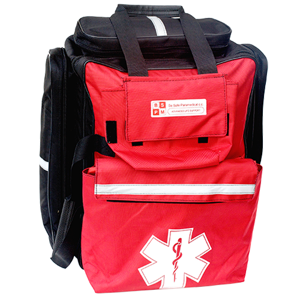
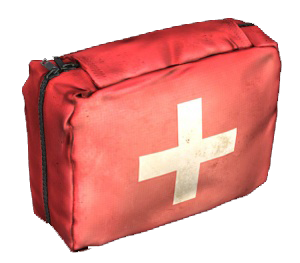
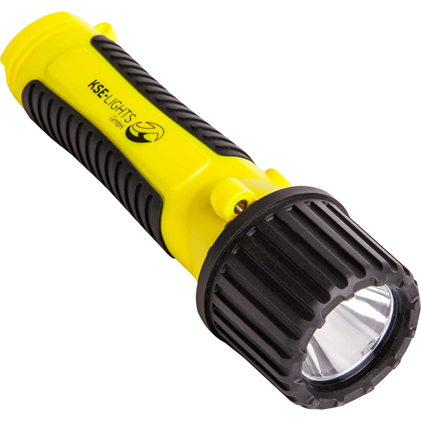
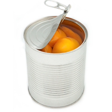
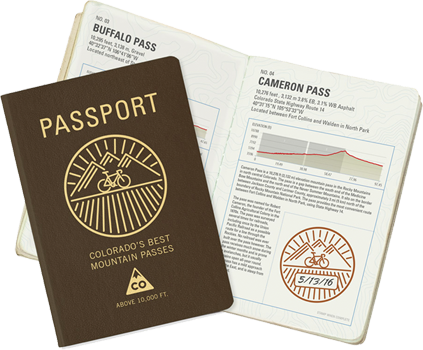
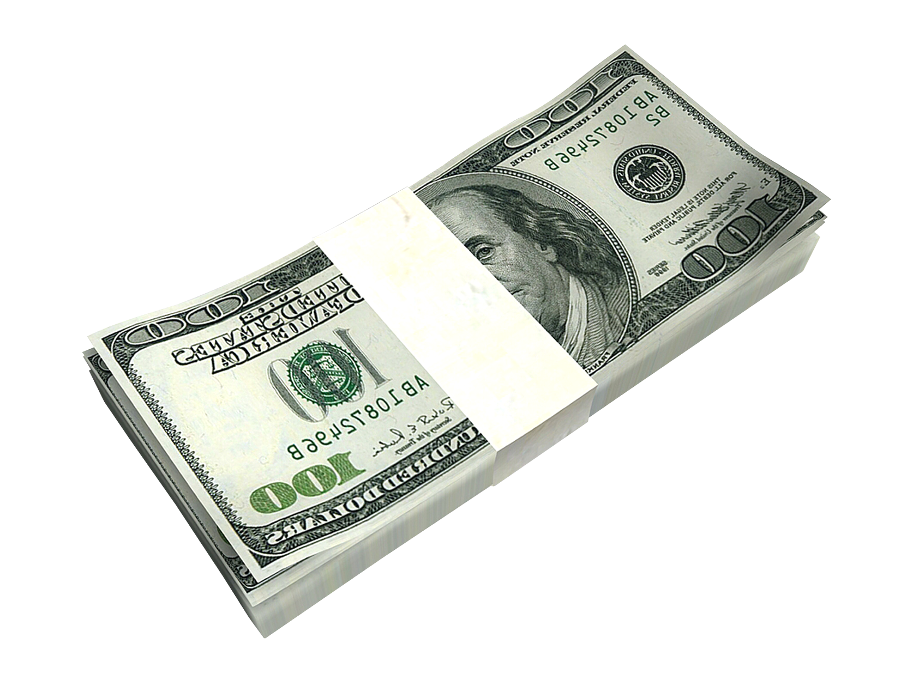

In case of disaster the first thing we need to take is backpack with first aid








Small(Every Hour) Small(Every Day) Small(Every Week) Major(Every 50 Years) Great(Every 100 Years) Great(Every 300 Years) Super(Every 1000 Years)
| Date | Time | Type | Place |
|---|
An earthquake is the sudden, rapid shaking of the earth, caused by the breaking and shifting of underground rock. Earthquakes can cause buildings to collapse and cause heavy items to fall, resulting in injuries and property damage.
Secure items, such as televisions, and objects that hang on walls. Store heavy and breakable objects on low shelves. Practice Drop, Cover, then Hold On with family and coworkers. Drop to your hands and knees. Cover your head and neck with your arms. Crawl only as far as needed to reach cover from falling materials. Hold on to any sturdy furniture until the shaking stops. Create a family emergency communications plan that has an out-of-state contact. Plan where to meet if you get separated.
Make a supply kit that includes enough food and water for at least three days, a flashlight, a fire
extinguisher, and a whistle. Consider each person’s specific needs, including medication. Do not forget the
needs of pets. Have extra batteries and charging devices for phones and other critical equipment.
Consider obtaining an earthquake insurance policy. Standard homeowner’s insurance does not cover earthquake
damage.
Consider a retrofit of your building to correct structural issues that make it vulnerable to collapse during an
earthquake.
Survive DURING
Drop, Cover, then Hold On like you practiced. Drop to your hands and knees. Cover your head and neck with your arms. Hold on to any sturdy furniture until the shaking stops. Crawl only if you can reach better cover without going through an area with more debris.
If in bed, stay there and cover your head and neck with a pillow.
If inside, stay there until the shaking stops. DO NOT run outside.
If in a vehicle, stop in a clear area that is away from buildings, trees, overpasses, underpasses, or utility
wires.
If you are in a high-rise building, expect fire alarms and sprinklers to go off. Do not use elevators.
If near slopes, cliffs, or mountains, be alert for falling rocks and landslides.
Expect aftershocks to follow the largest shock of an earthquake. Check yourself for injury and provide assistance to others if you have training. If in a damaged building, go outside and quickly move away from the building. Do not enter damaged buildings.
If you are trapped, cover your mouth. Send a text, bang on a pipe or wall, or use a whistle instead of shouting
so that rescuers can locate you.
If you are in an area that may experience tsunamis, go inland or to higher ground immediately after the shaking
stops.
Save phone calls for emergencies.
Once safe, monitor local news reports via battery operated radio, TV, social media, and cell phone text alerts
for emergency information and instructions.
Use extreme caution during post-disaster clean-up of buildings and around debris. Do not attempt to remove
heavy debris by yourself. Wear protective clothing, including a long-sleeved shirt, long pants, work gloves,
and sturdy, thick-soled shoes during clean-up.
In case of disaster the first thing we need to take is backpack with first aid